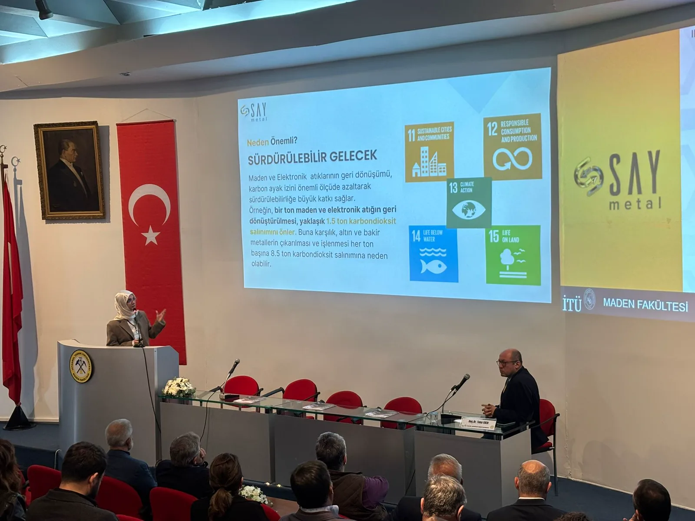

İTÜ Maden Fakültesi'nde SAY METAL sunumuSAY METAL presentation at the ITU Faculty of Mines
III. Sektör Akademisyen Öğrenci Buluşmaları, İhsan Ketin Konferans Salonu.3rd Industry, Academia and Student Meetings, İhsan Ketin Conference Hall.
Planda "2023 İTÜ Maden Konferansı"; fotoğraftaki slayt 2024 diyorPlan says "2023 ITU Mining Conference"; the slide in the photo says 2024
